7歳未満のねこちゃんの健康診断プログラム
1年に1回の健康診断プログラムです。若い年齢の猫ちゃんであっても、なんらかの異常がみつかることがあります。また、毎年健康診断を受けることで、各種数値の異常に早めに気が付くことができ、早期治療につながります。
検査項目：
- 身体検査
- 血液生化学検査
- 血球検査
- レントゲン検査（胸部1枚）
- 尿検査（当日持参いただきます）
- 便検査（当日持参いただきます）

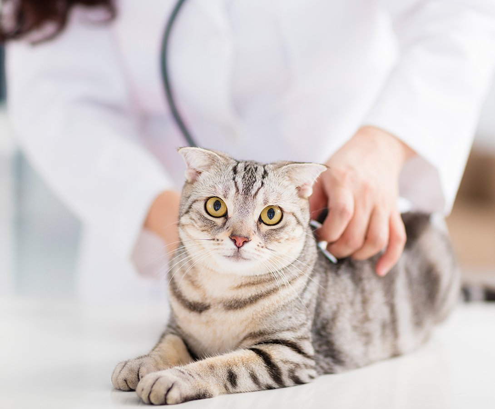
猫ちゃんは病気を隠すのが上手な動物です。特に慢性腎臓病・甲状腺機能亢進症などは、初期症状では気が付きにくく、猫ちゃんがかかりやすい病気です。
ご家族が気づいたときには手遅れになっていることが多いため、大切な家族の一員である猫ちゃんと飼い主様がより長く一緒に家族として生活できるように、私たちは予防医療（早期発見＆早期治療）に注力しています。
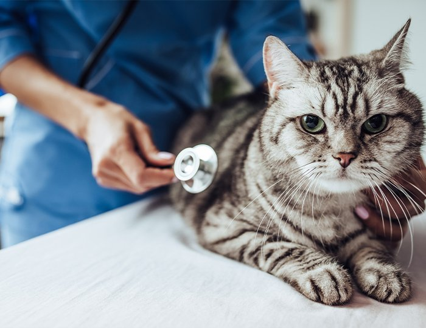
定期的な健康診断は、潜在的な健康問題を早期に発見し、適切な治療や予防策を講じるのに役立ちます。
たとえば、歯を痛がっていても、その原因が感染症であったり、おしっこが出なくなっていても、その原因が泌尿器疾患ではなくヘルニアであったりするなど、その症状の根底に生活環境が関係している場合があります。
よって、明らかな症状が出る前の早期発見をおすすめしています。
年齢別の2つの健康診断プログラムをご用意しています。
1年に1回の健康診断プログラムです。若い年齢の猫ちゃんであっても、なんらかの異常がみつかることがあります。また、毎年健康診断を受けることで、各種数値の異常に早めに気が付くことができ、早期治療につながります。
検査項目：
1年に2回の健康診断プログラムです。シニア期の猫ちゃんは加齢により免疫力が低下していくと様々な病気にかかりやすくなります。猫ちゃんと元気に長く一緒に生活を送れるようになることを目指します。
検査項目：
※7歳以上のねこちゃんの健康診断プログラムでは、血液生化学検査に甲状腺ホルモン（T4）の測定が含まれます。
| 身体検査の目的 | 猫ちゃんの一般的な健康状態や病気の早期発見。体重、体温、目、耳、歯、皮膚などのチェックをします。 |
|---|---|
| 血液検査の目的 | 血液中の異常な細胞の数や種類を測定したり、生化学的なパラメーターの測定により、貧血、感染、腎臓や肝臓の異常などを検出します。これにより、全体的な健康状態の把握ができます。 |
| レントゲン検査の目的 | 腸器や骨格の画像から、構造的な異常や腫瘍、肺の状態などを診断するのに役立ちます。特に骨折、腫瘍、呼吸器系の問題の確認ができます。 |
| エコー検査の目的 | 麻酔を使用せず、猫ちゃんの身体への負担を最小限に抑えつつ、猫ちゃんの腸器の状態や異変をいち早く把握することができます。 |
| 尿検査の目的 | 腎臓機能や尿路系統、糖尿病などを評価します。尿中の異常な成分や細菌を検出し、腎機能や尿路の健康を確認します。 |
| 便検査の目的 | 消化器系統の問題や寄生虫感染を検出します。便中の血液、寄生虫卵、細菌の有無を確認し、消化器系統の健康を評価します。 |
| 血圧測定の目的 | 血圧は健康かどうか判断する要素のひとつで、身体の異常を早期発見するためのものとして有効です。 |
| CT/MRI検査の目的 | より精密な検査としてCT/MRI検査があります。CT検査では内臓・骨疾患を発見、MRI検査では脳や脊髄の疾患を発見するのに役立ちます。どちらも腸器の断面まで撮影することができます。 |
※尿と便をご提出ください。また当日は絶飲絶食した状態でご来院ください。
※お電話またはご来院ください。今後の健康管理について獣医師から説明いたします。
子猫をお迎えした際に、健康面で注意するべきことがいくつかあります。
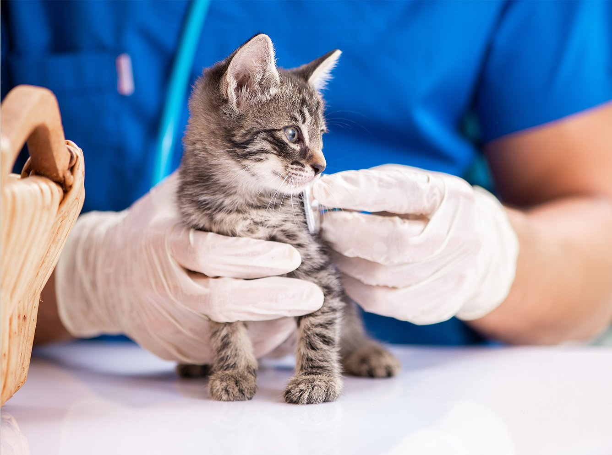
まずは早期に動物病院で健康チェックを受けましょう。ノミなどの駆虫が必要になることがあります。
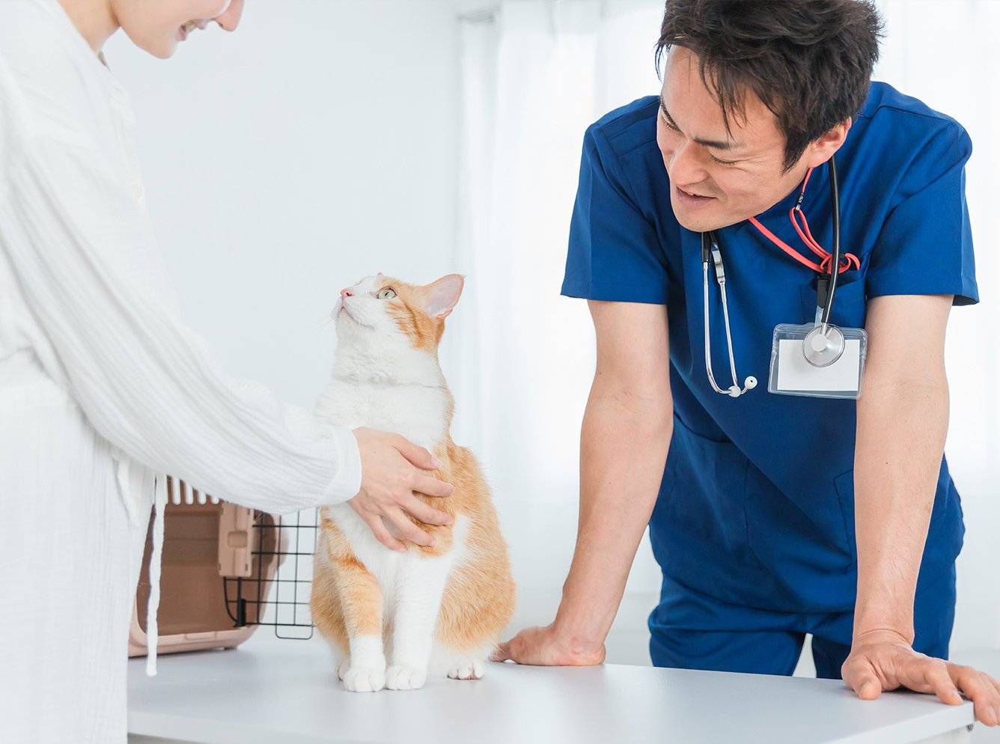
保護猫と同様に、まずは動物病院で健康チェックを受けましょう。一見元気そうでも、隠れた病気が発症していることもあります。
| 子猫の月齢別の健康チェックの流れ | |
|---|---|
| 2ヶ月齢〜4ヶ月齢 | ワクチン接種＆健康チェック |
| 6ヶ月齢 | 避妊去勢手術の術前検査、避妊去勢手術 |
| 1歳齢 | 1歳齢検診、ワクチン追加接種 |
※その後は、定期的なワクチン接種、ノミマダニ予防、健康診断により予防をしていきましょう。
複数の感染症を予防する「混合ワクチン」を接種しましょう。混合ワクチンの3種、5種について解説します。
このような感染症を予防します
このような感染症を予防します
| 猫ウイルス性鼻気管炎とは | 猫ヘルペスウイルス（FHV）によって起こる猫風邪の一種です。主な症状は、鼻水、くしゃみ、発熱、食欲低下などです。他にも結膜炎なども見られます。 |
|---|---|
| 猫カリシウイルス感染症とは | 猫カリシウイルスというウイルスによって起こる感染症です。一般的に猫ちゃんの口内や呼吸器で増殖します。 |
| 猫汎白血球減少症とは | 猫パルボウイルスによって起こる感染症です。 生後5か月未満くらいの子猫に発症しやすく、目や脳に異常をきたすこともあります。 |
| 猫白血病ウイルス感染症 | 猫白血病ウイルスの感染によって起こる感染症です。 元気喪失、食欲低下、発熱、リンパ節の腫れなどの症状が見られ、リンパ腫や白血病の原因となります。 |
| 猫クラミジア感染症 | 猫クラミジアによる感染症です。主な感染経路は、猫同士の直接の接触によるものです。これは粘膜で増殖するため、感染初期には結膜炎の症状が多く見られます。 |
| 1歳までの子猫のワクチン接種のフロー | |
|---|---|
| 1回目 | 生後約2か月 |
| 2回目 | 生後約3か月 |
| 3回目 | 生後約4か月 |
| 4回目以降の追加接種 | 生後1年※その後は1年〜3年おきに1回追加接種します。 |
| 1歳以上の成猫が始めてワクチン接種するフロー | |
|---|---|
| 1回目 | 接種した年齢 |
| 2回目 | 1回目の約4週間後 |
| 3回目以降の追加接種 | 1年〜3年おきに1回追加接種します。 |
まれにワクチンの副反応として、アナフィラキシーショックを起こすことがあります。発症する場合は、接種後1時間以内に発症するため、その時間帯は猫ちゃんの様子を観察してください。
他の副反応としては、ムーンフェイス、元気・食欲低下、発熱、嘔吐下痢などが見られることもありますが、数日中には症状がおさまります。
異常があれば、すぐに動物病院を受診しましょう。接種当日は、激しい運動やシャンプーを避けることを守りましょう。
人間や動物の体表面から吸血する節足動物です。皮膚病の原因になったり、様々な感染症を媒介したりするため、予防や駆虫を心がけましょう。
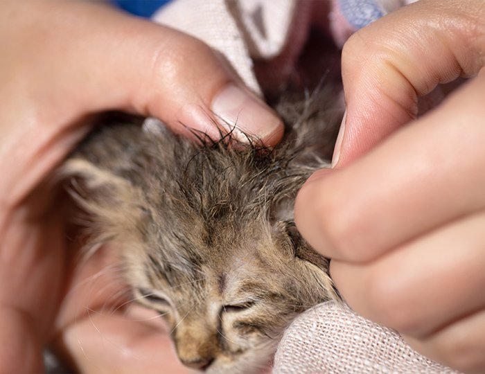
室内飼育でも寄生することがあります。具体的には、外から侵入したり、ご家族の衣類に付着して侵入したりします。
よって、完全室内飼いの場合であっても油断はできないため、定期的に予防しましょう。
ノミマダニが媒介して、このような様々な病気を発症することもあります。
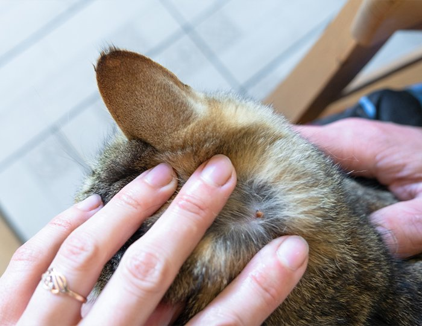
ノミによる吸血が繰り返されると、動物がアレルギー状態となり、激しいかゆみ、湿疹、脱毛などが生じる可能性があります。治療には時間がかかることもあります。
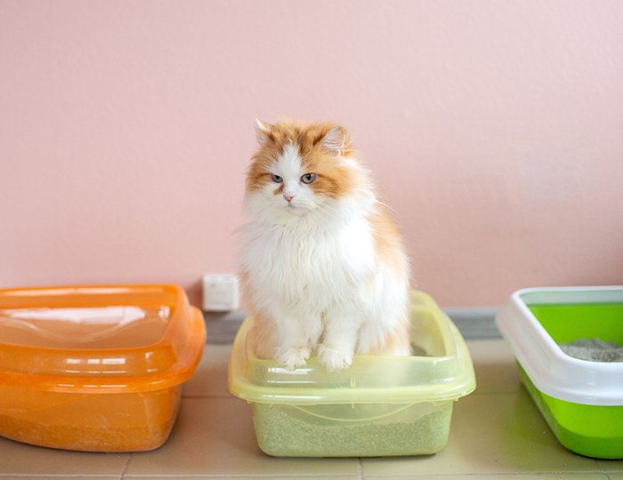
ノミを介してネコやイヌが感染し、下痢や嘔吐などの症状が現れます。ヒトも感染のリスクがあるので注意が必要です。
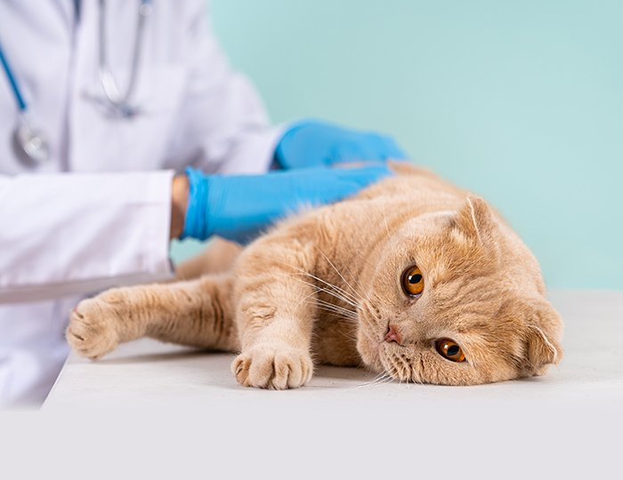
猫の赤血球表面に寄生するヘモバルトネラというマイコプラズマが原因となり、貧血、発熱、元気消失などの症状になります。
ノミによる被害は動物だけでなく、人間にも深刻な影響を与える可能性があります。
ウイルスを保有しているマダニに、人が咬まれることで感染するダニ媒介性の感染症もあります。
SFTSウイルスに感染した犬や猫に噛まれたり、人が犬や猫の体液に直接触れたりすることで感染することも報告されています。SFTSによる致死率は10％～30％と高いため、注意が必要です。
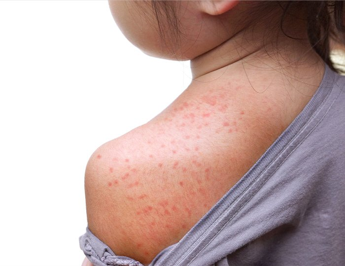
人間がノミに刺されると激しいかゆみが発生し、かくことで細菌感染が生じ、アレルギー反応や水ぶくれができる可能性があります。
また、ノミは感染症を媒介する可能性があるため、適切な予防と治療が重要です
ネコからヒトへ伝播するバルトネラ菌による感染症です。猫に咬まれたりひっかかれたりすることで、リンパ節の腫れ、発熱、頭痛などの症状が現れる可能性があります。
ノミの駆除や対策は動物だけでなく、人間にとっても重要で、環境の浄化や予防措置を講じることが被害を最小限に抑えるために必要です。
ノミやマダニの駆虫薬の投与をします。スプレータイプや液体タイプ（スポットタイプ）があります。
ご自宅にいるときに猫ちゃんの身体にノミマダニを見つけた場合は、自己判断で無理に取ろうとせずに、動物病院で処置してもらいましょう。
無理に取ろうとすると、さらに感染が広がったり、猫ちゃんの身体に悪影響になることもあります。
寄生虫が猫に感染すると、その寄生虫が引き起こす症状だけでなく、媒介する可能性がある病気にも注意が必要です。
ノミやマダニは予防薬を使用することで対策できますので、一年を通して塗布することをオススメします。予防薬の種類によっては、フィラリアも同時に措置することができます。愛猫の健康を守るために、定期的に予防することが大切です。
猫ちゃんのフィラリア症は発生する確率が低いですが、診断が難しいため原因を見逃しやすく、発症すると重症化してしまいます。フィラリア症は予防ができる病気です。きちんと定期的に予防薬を塗布しましょう。
猫ちゃんのフィラリア症は、発症すると呼吸困難や咳、嘔吐、食欲不振、体重減少などの症状がみられます。
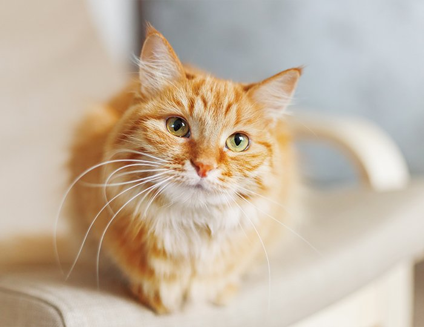
フィラリアに感染しても猫ちゃんの場合は、少数の寄生にとどまることが多く、エコーや血液検査でみつけにくいです。さらに症状がない場合もあり、最悪の場合は突然死に至ってしまいます。
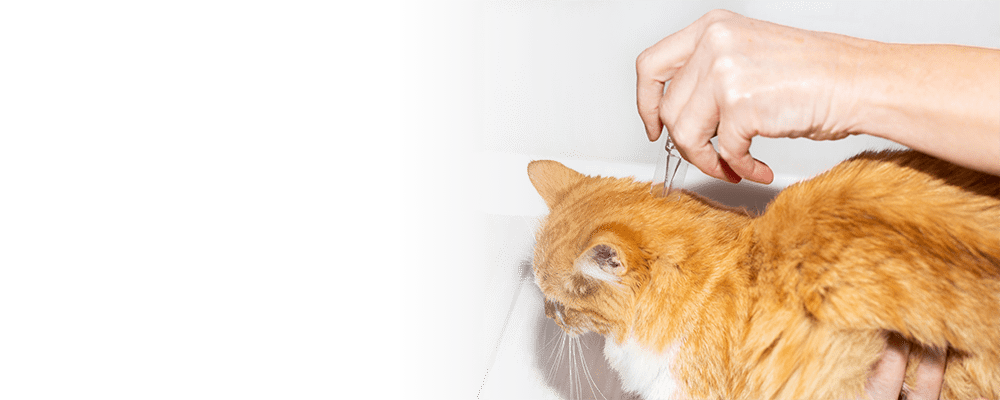
根本的な治療法がないため、猫ちゃんのフィラリアは予防が重要です。フィラリアに対する予防薬がありますので、完全室内飼いの猫ちゃんも、室外にでる猫ちゃんも予防薬を塗布しましょう。
※病気の予防としては、完全室内飼いが望ましいでしょう。
| 予防薬をつける期間 | 蚊が活発に活動する温暖な時期である4月から、蚊がいなくなってから1~2か月後（大体12月ころ）まで、月に1回のペースで塗布しましょう。 |
|---|
各院の診療時間・ご予約方法は、開院に向けて決定次第ご案内いたします。